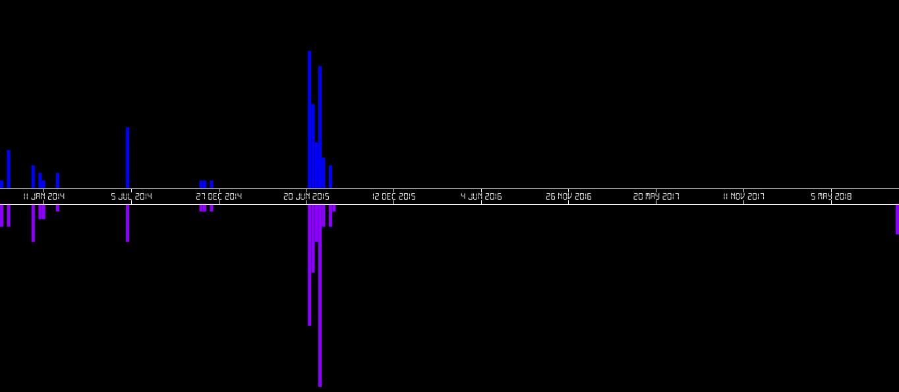
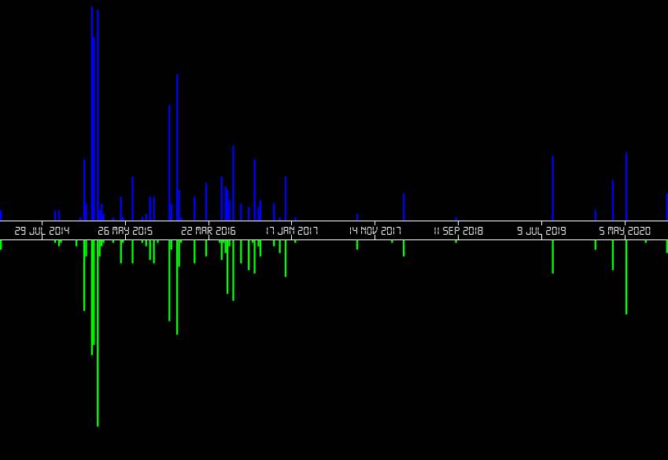
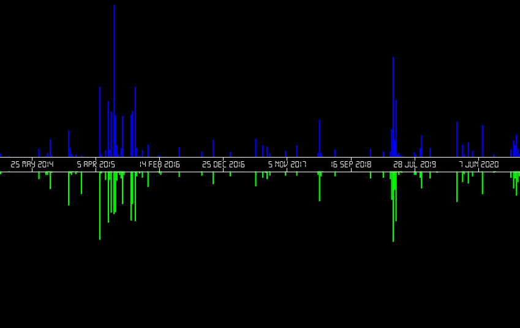
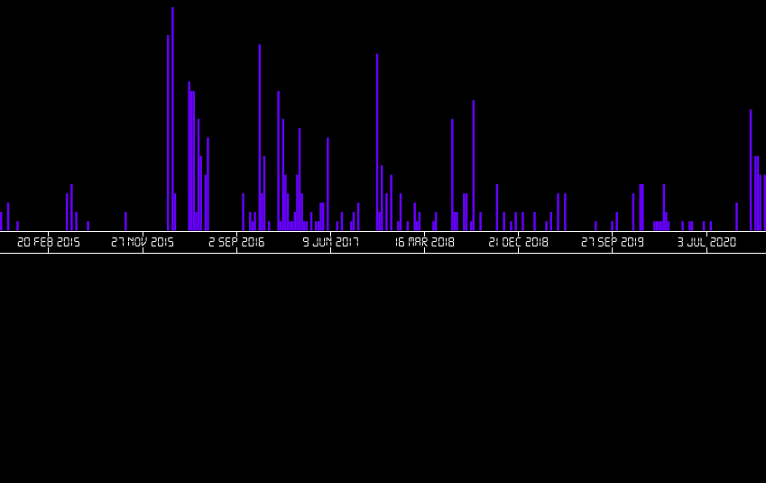
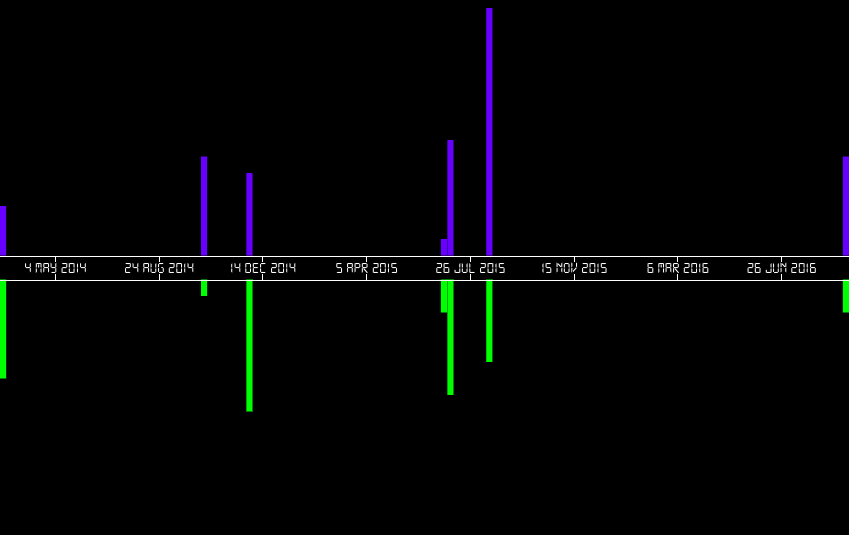
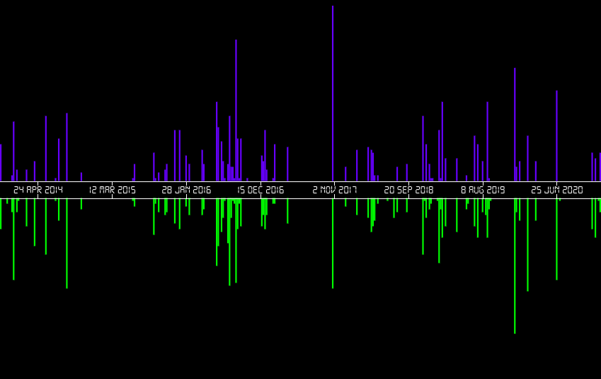
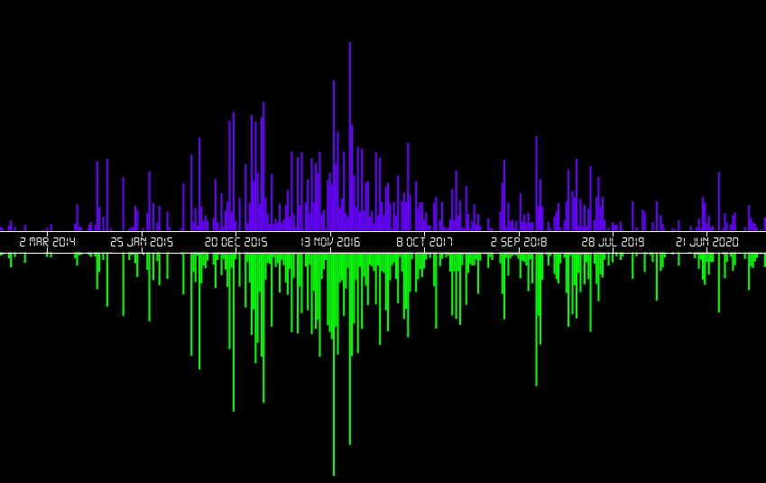
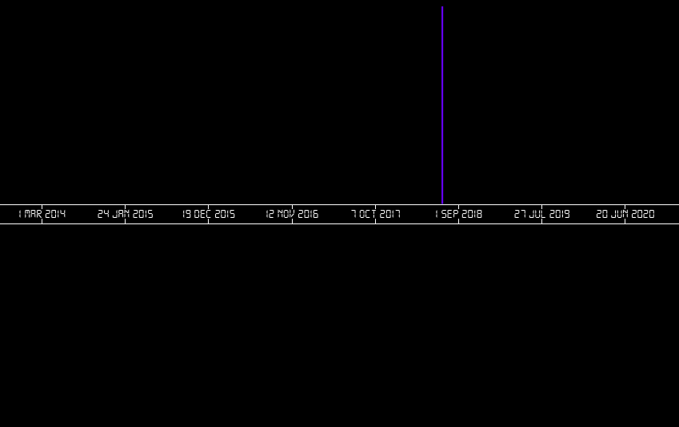
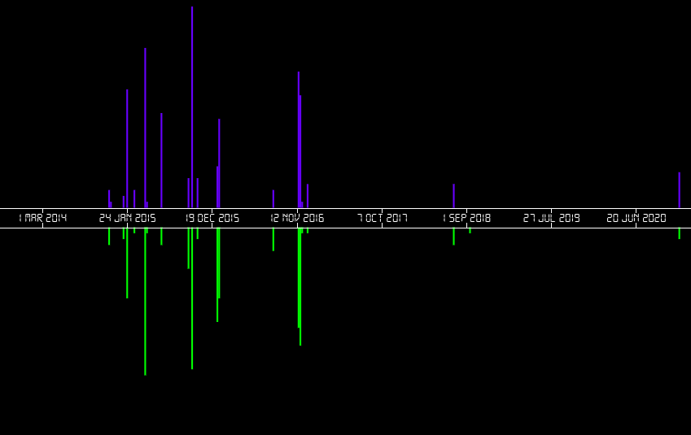
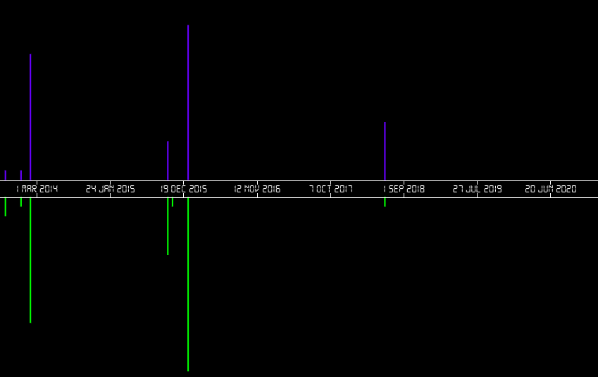

Round 1: Which Twat Posted That? (Questions)
1.0
18th October, 2015:
"Pre drinks before the match! Need a drink nowadays before watching Newcastle!"
Message History:

1.1
24th June, 2016:
"Our whole lives we are told that you can achieve so much more when you work as a team. Why is it that when we are given the option between working together to achieve a solution and winging it on our own we decide we are better to go it alone than as a team....disappointing result to say the least!"
Message History:

1.2
24th June, 2016
"Shocked, appalled and disappointed. Woke up this morning and thought it was all a dream, but no, the country really has voted in favour of Farage, Johnson and Gove.
We’ve stopped the free movement of our people, Japan has already stopped trading with us and the pound is at its lowest level since the 80s.
Farage has backtracked on his figures for the NHS, saying there’s no way he can guarantee £350million a day, which played a huge part in the Leave Campaign’s scaremongering tactics and propaganda.
We’ve chosen to leave the biggest and most successful peace project the world has ever seen, and I fail to see how some people thought this was the right decision to make. Immigration is a good thing, without it we wouldn’t have a large portion of our doctors, surgeons, teachers, scientists and friends. Most people in this country can’t claim to be 100% British.
To make things worse, it’s not my generation that voted this way, but it is my generation that will be most affected.
So thank you baby boomers, for yet another thing my generation will have to suffer with thanks to you. I hope you’re happy.
Edit: #iameuropean"
Message History:

1.3
30th April, 2011
908 words, title: "Hey, don't you diss MY royal family."
Message History:

1.4
4th September, 2013 (AM)
"Start sixth form tomorrow :)"
4th September, 2013 (PM)
"what do we have to take to 6th form tomorrow"
5th September, 2013 (AM)
"Start sixth form today"
5th September, 2013 (PM)
"first day of sixth form was pretty good"
Message History:

1.5
29th May, 2011
"ITS OKAY TO BE GAY"
Message History:

1.6
2nd June, 2014
"Sat in the library and there is a group of old ladies nattering away about their knitting, a guy talking on the phone, and two men loudly discussing a book. I thought libraries were supposed to be quiet places :'("
Message History:

1.7
Never (Ever)
""
Message History:

1.8
18th July, 2012
"don't let anyone knock you down x"
18th July, 2012 (approximately an hour later)
"I hate nike airs, why are people wearing them again? You just look like a top twat"
Message History:

1.9
9th October, 2013
"Thankywanky"
Message History:
